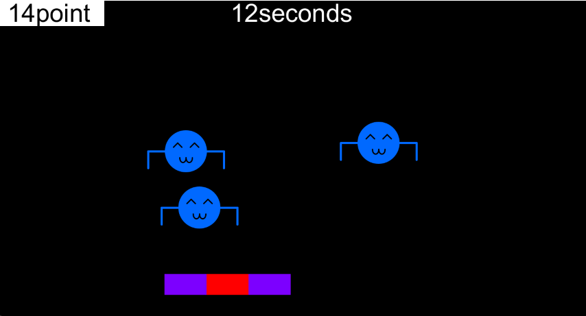

HitFace!
作品紹介
高専にいたとき、プログラミングに触れるための授業で成果物として制作したものです。
ゲーム性は単純で、マウス操作でバーを動かし、跳ね返るキャラクターをできるだけ中央に当てるというものです。
時間制限があり、その間にできるだけ多くの点数を稼ぐことを目的とします。

工夫点・技術的特徴
授業外で独自に調査をし、オブジェクト思考プログラミングの使用も試しました。
作品リンク
GitHubソースダウンロードページ